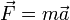

Assy(アッシー)のページ
ビルゲイツ 15:36
パソコンは悪い。ビルゲイツは、パソコンがみんなのものなのが分かっていない。
ビルゲイツのものと思っている。なぜなら、勝手に更新され、ひとりでに変わる。
Linuxは、完全にソ連だ。本当に社会所有にした。ライセンスはGPLで、GNUのものになる。
----
ソ連 15:37
ソ連は、良いものが悪いものだった。
それが、崩壊して、悪いものが良いものになった。
何も出来ない。破綻している。
----
パソコン 15:44
ビルゲイツは普通だ。なぜなら、きちんと給与を払う。
Linuxは悲惨だ。給与を払わない。フリーだ。
日本はビルゲイツには勝てない。マイクロソフトには、一流の数学者が多い。日本に数学者は居ない。
----
色んなこと 16:43
この世界には何があるんだろう。
この世界は、どうすれば分かるんだろう。
物理は、色んなことを分かっている。歴史も、色んなことを分かっている。
色んなこと、それは、論理であり、可能性であり、現実である。
具体性であり、総合であり、専門である。
現実世界を、どうすれば分かるのか。本当に、数式で分かるのか。
考え方を統一して、ひとつひとつのことを分かる。色んな考え方を分かる。
数式は、いったい何なんだろう。
言葉を分かる。言葉を覚える。
宇宙の定理があって、それを発見する。
自由な考え方と、思考力がある。
現実世界には、たくさんのものと現象があり、その数は、数式で分かる。
ものや空間、エネルギーを数にして、計算している。
きちんと論理的に分かっている。
光や力、熱はエネルギーになる。
数学は、分かるわけのないことを分かっている。
物理って、何だろう。
色んな力があり、そこに、色んな数学がある。
何故か、数式になる。物質の色んなことがらから、力を出すことが出来る。
光もエネルギーも、同じ。
----
物理 16:55
物理は、色んなことを分かっている。
色んなことからその力の数を出すことが出来る。
----
物理 16:58
数式を見ると、Fが力だ。
mとαが力にまつわる色んなことだ。質量と加速度だ。

速さや力などを求める数式が多い。
----
馬鹿と思うなら分かる 17:08
人間は、馬鹿と思うなら分かる。
----
専門 18:17
僕の専門は決まった。世界史だ。